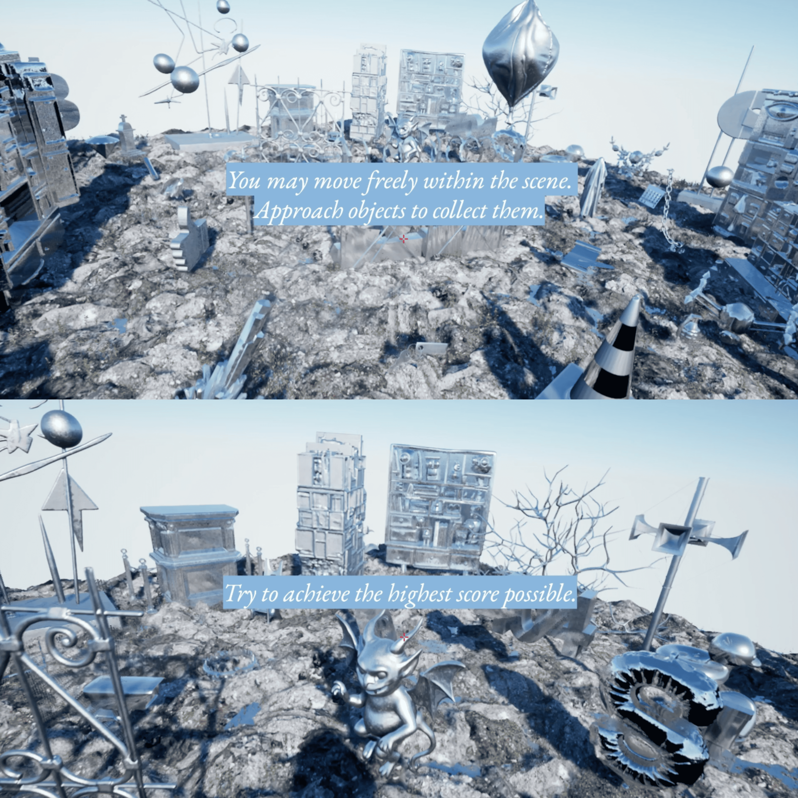

Artwork
How Not To Be Invisible
How Not To Be Invisible is an interactive installation that examines how scoring systems shape visibility, access to opportunity, and social value. In contemporary society, individuals are continually drawn into mechanisms of evaluation through educational grades, application procedures, allocation decisions, risk models, and other forms of assessment. After measuring individuals, these systems determine what can be seen, who can be recognised, and which ways of being are permitted to enter spaces of opportunity. The work translates this abstract logic into a digital participatory experience. Participants enter a simulated environment populated by more than fifty symbolic objects, including diplomas, recommendation letters, VIP passes, likes, money, assets, and ordinary items that appear to hold little institutional value. They are told that their “visibility score” will be calculated according to the objects they collect. However, the work provides no clear hierarchy, explanation, or fixed rules. Participants must rely on visual judgement, social intuition, and established assumptions about value in order to decide which objects are worth accumulating. At the end of the experience, the system calculates a score and assigns each participant to one of two spatial outcomes. Those whose score exceeds the threshold enter a bright and celebratory environment in which their presence is amplified. Those whose score falls below the threshold enter a muted and diminished space, where feedback is minimal and the environment offers little sense of appeal. This binary structure critiques and reflects real-world evaluative systems, in which complex lives are compressed into numerical thresholds, and acceptance or exclusion is often processed automatically. The installation explores how scoring is perceived, experienced, and materialised within digital space. It uses artistic practice as a method for making invisible systems perceptible and open to question. By staging evaluation as an experience of uncertainty, the project invites audiences to reflect on algorithmic governance, institutional judgement, and the politics of recognition in a technologically mediated society.

Screenshots of the interactive scene interface.